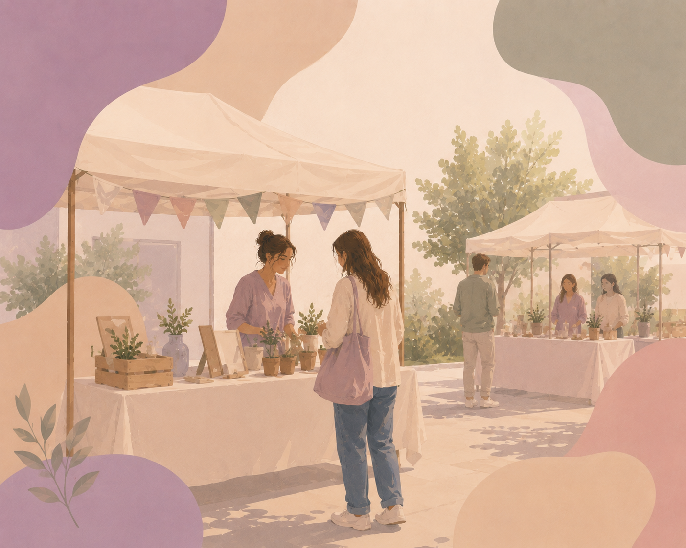
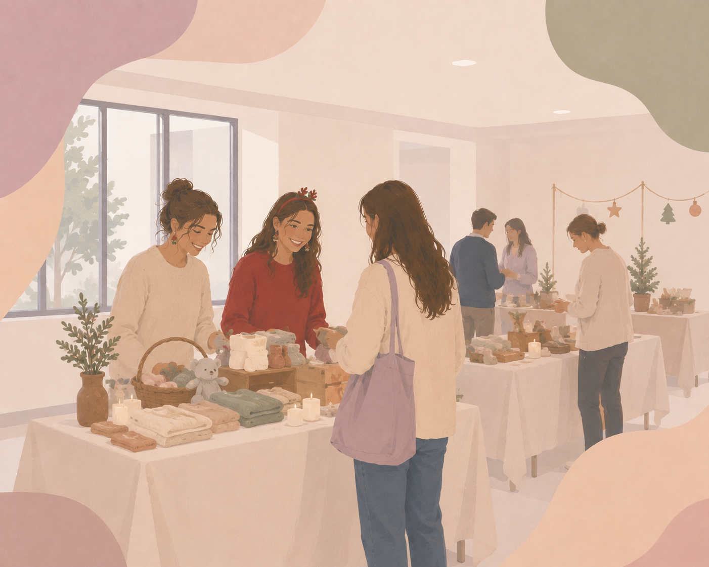
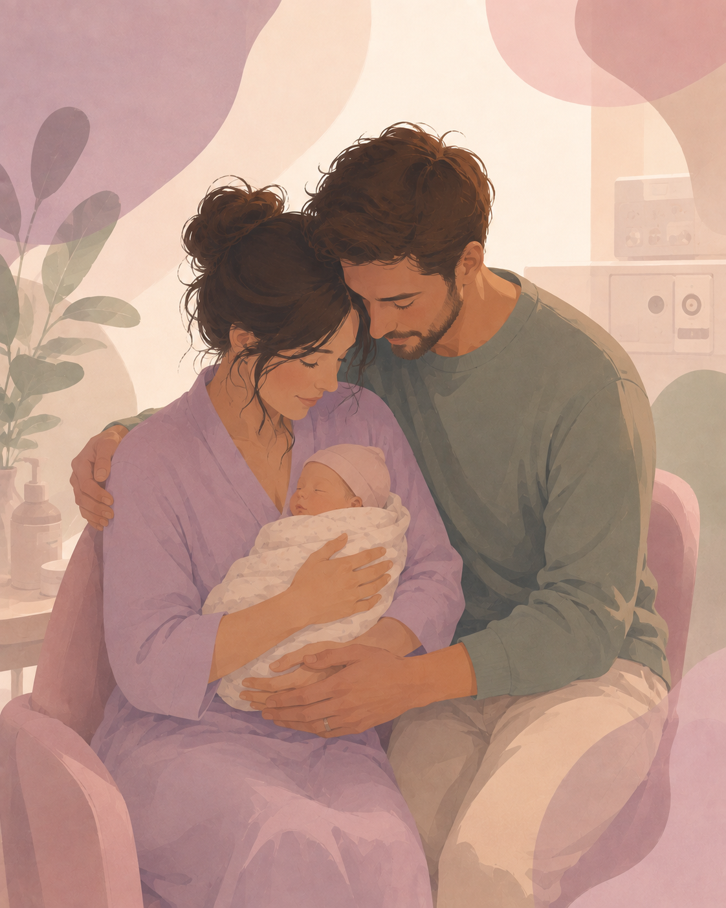
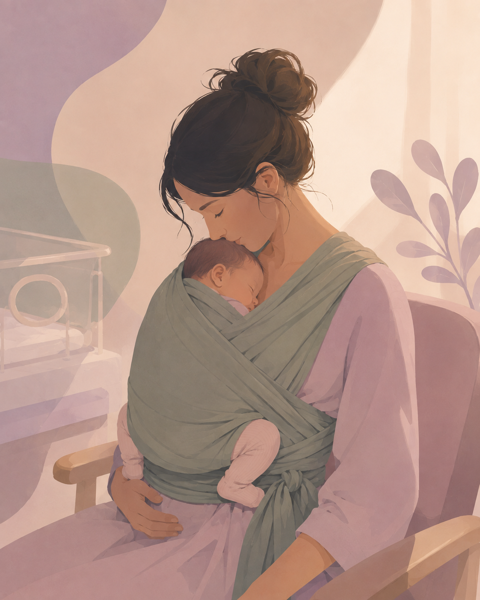
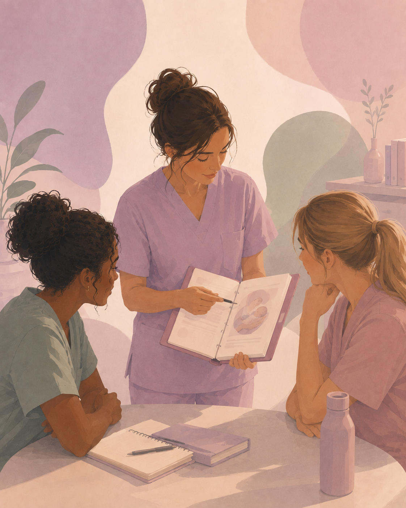

COLLECTE
Un premier Marché de printemps
Plus de 1 000 € récoltés lors de cette première édition.
Découvrir →À p'tits pas agit pour améliorer le quotidien des nouveau-nés hospitalisés en néonatologie, soutenir leurs familles et accompagner les professionnels au plus près du terrain.

Actualités récentes

Plus de 1 000 € récoltés lors de cette première édition.
Découvrir →7 000 € investis pour améliorer l'accueil et le confort des familles.
Découvrir →Des fauteuils financés pour les deux secteurs de néonatologie.
Découvrir →La néonatologie en quelques chiffres
Chiffres issus des données de présentation du service, à actualiser si nécessaire.
Actions concrètes
Réalisation
7 000 € investis dans sa rénovation.
Voir le projet →Équipement
Financés pour le 4N et le 4B.
Voir le projet →Collecte
Plus de 1 000 € récoltés.
Voir le projet →
Collecte
Un rendez-vous solidaire chaque mois de décembre.
Voir le projet →Notre mission
01
Contribuer à un environnement de soins attentif au rythme, au confort et au développement du nouveau-né.
02
Soutenir la place des parents et améliorer le vécu de l'hospitalisation.
03
Encourager la transmission, la formation continue et le développement des compétences.
Au plus près des familles

Allaitement
Favoriser le confort, le lien et l'accompagnement autour de l'allaitement.

Portage
Le contact et la proximité ont leur place dès l'hospitalisation.
Parentalité
Donner aux parents une vraie place auprès de leur enfant.

Formation
Soutenir les professionnels dans leurs pratiques.
Soutenir l'association